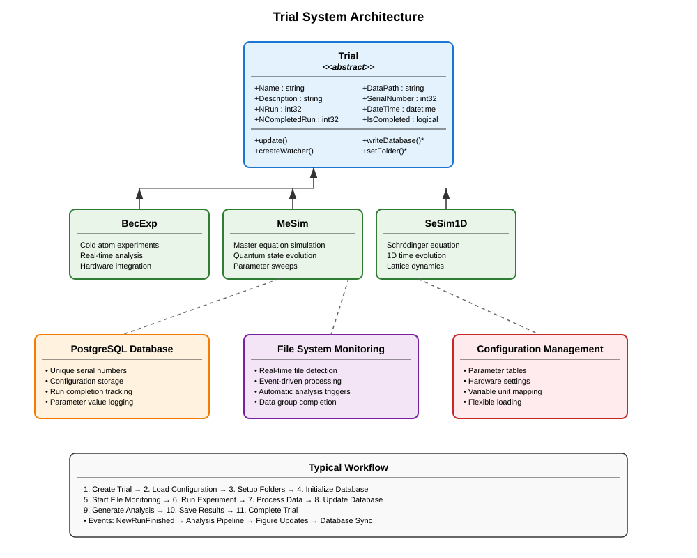

Manage Experimental and Simulation Trials#
The Trial framework provides a comprehensive system for orchestrating and managing experimental runs and simulations in the MuscleMuseum environment. It handles data organization, database persistence, file system monitoring, and experimental lifecycle management with robust error handling and automatic data processing.
Overview#
The Trial system serves as the backbone for experimental data management, providing:
Lifecycle management: Complete experimental workflow from setup to completion
Database integration: PostgreSQL-based persistence and querying
File system monitoring: Automatic detection of new data files
Configuration management: Flexible parameter and hardware settings
Data organization: Hierarchical folder structure with date-based organization
Event-driven processing: Real-time analysis triggered by data arrival
Multi-dimensional scanning: Support for 1D and 2D parameter sweeps
The framework follows an object-oriented design where the abstract Trial base class defines the common interface, and concrete implementations (like BecExp) handle experiment-specific functionality.
Trial Architecture#
{kind=link}

Core Trial Class#
The Trial abstract base class provides the fundamental infrastructure for all experimental and simulation workflows.
Essential Properties:
Name: Trial identifier matching configuration entriesDescription: Human-readable description of the experimental purposeNRun: Total number of planned experimental runsNCompletedRun: Number of successfully completed runsDateTime: Timestamp when the trial was initiatedSerialNumber: Unique database-generated identifier
Data Management:
DataPath: Full path to trial data storage directoryObjectPath: Path to saved trial object fileDataFormat: File extension for data files (e.g., “.tif”, “.mat”)DataPrefix: Filename prefix for run data (e.g., “run_1_atom.tif”)
Abstract Interface:
Subclasses must implement these essential methods:
writeDatabase(): Create initial database entryupdateDatabase(): Synchronize current state to databasesetFolder(): Configure data storage directoriessetConfigProperty(): Apply configuration parameters
Basic Usage Pattern:
% Create a concrete trial implementation
trial = ConcreteTrial("ExperimentName", "ConfigurationName");
% The trial automatically:
% 1. Loads configuration from database/file
% 2. Creates date-organized folder structure
% 3. Establishes database connection and logging
% 4. Assigns unique serial number
% 5. Initializes file system monitoring
% Update trial state and persist changes
trial.update();
Data Organization System#
Hierarchical Folder Structure:
The Trial system creates a standardized folder hierarchy:
ParentPath/
├── YYYY/ % Year folder
│ ├── YYYY.MM/ % Year.Month folder
│ │ ├── MM.DD/ % Month.Day folder
│ │ │ ├── TrialName_001/ % Trial folder with index
│ │ │ │ ├── data/ % Raw experimental data
│ │ │ │ ├── analysis/ % Processed analysis results
│ │ │ │ ├── logs/ % Cicero and hardware logs
│ │ │ │ ├── object.mat % Saved trial object
│ │ │ │ └── description.txt % Human-readable description
Automatic File Naming:
% Files are automatically named with consistent patterns:
% run_1_atom.tif, run_1_probe.tif, run_1_bg.tif
% run_2_atom.tif, run_2_probe.tif, run_2_bg.tif
% ...
Database Integration#
PostgreSQL Backend:
The Trial system uses PostgreSQL for robust data persistence:
% Database connections are automatically managed
trial = ConcreteTrial("MyExperiment", "MyConfig");
% Writer connection for data insertion
trial.Writer % database.postgre.connection object
% Reader connection for data queries
trial.Reader % database.postgre.connection object
Automatic Schema Management:
Each trial type gets its own database table with:
Unique serial number generation
Timestamp tracking
Configuration parameter storage
Run completion status
Scanned variable values
Data Persistence:
% Manual object persistence
trial.updateObject(); % Save to .mat file
trial.updateDatabase(); % Update database record
trial.update(); % Both operations together
File System Monitoring#
Real-Time Data Detection:
The Trial system monitors data directories for new files:
% File system watcher automatically created
trial.createWatcher();
% Watcher triggers events when DataGroupSize files are detected
% For example, if DataGroupSize = 3:
% - run_1_atom.tif
% - run_1_probe.tif
% - run_1_bg.tif
% → Triggers NewRunFinished event
Event-Driven Processing:
% Listen for new run completion
listener = addlistener(trial, 'NewRunFinished', @(src,evt) processNewRun(src,evt));
function processNewRun(trial, eventData)
% Automatically triggered when new data arrives
runIndex = trial.NCompletedRun + 1;
% Process the new data
trial.processRun(runIndex);
% Update completion count
trial.NCompletedRun = runIndex;
trial.update();
end
Parameter Scanning#
1D Parameter Scans:
% Configure single parameter scan
trial.ScannedVariable = "MagneticField";
trial.ScannedVariableUnit = "G";
trial.NRun = 21; % 21 different field values
% Scanned values are automatically tracked per run
scannedValues = trial.ScannedVariableList; % 1×21 array
2D Parameter Scans:
% Configure two-parameter scan
trial.ScannedVariable = "MagneticField";
trial.ScannedVariable2 = "HoldTime";
trial.ScannedVariableUnit = "G";
trial.ScannedVariableUnit2 = "ms";
trial.Is2dScan = true;
trial.NRun = 100; % 10×10 parameter grid
% Access 2D scan data
[X, Y] = trial.VariableGrid; % Meshgrid for plotting
sortedRuns = trial.RunListSorted; % Runs sorted by parameter values
Configuration System#
Flexible Configuration Loading:
% Load from database configuration
trial = ConcreteTrial("ExperimentName", "DatabaseConfigName");
% Load from table
configTable = readtable("experiment_config.xlsx");
trial = ConcreteTrial("ExperimentName", configTable);
% Load from struct
configStruct.param1 = value1;
configStruct.param2 = value2;
trial = ConcreteTrial("ExperimentName", configStruct);
Dynamic Properties:
The Trial class supports dynamic property addition for experiment-specific parameters:
% Add custom properties at runtime
addprop(trial, 'CustomParameter');
trial.CustomParameter = customValue;
% Properties are automatically included in database updates
Advanced Features#
GUI Integration:
% Associate with control panel GUI
trial.ControlAppName = "ExperimentControlPanel";
% Log messages are automatically routed to GUI
trial.displayLog("Experiment started", "normal");
trial.displayLog("Warning: Low laser power", "warning");
trial.displayLog("Error: Camera disconnected", "error");
Automatic Cleanup:
% Configure automatic deletion of empty trials
trial.IsAutoDelete = true;
% Trials with NCompletedRun = 0 are automatically removed
Serialization and Loading:
% Save trial object
save(trial.ObjectPath, 'trial');
% Load existing trial
loadedTrial = loadTrial("ExperimentName", serialNumber);
% Delete completed trial
deleteTrial("ExperimentName", serialNumber);
Error Handling and Recovery#
Robust Database Operations:
try
trial.writeDatabase();
catch ME
trial.displayLog("Database write failed: " + ME.message, "error");
% Implement fallback to local storage
end
File System Resilience:
% Handle missing data files gracefully
if exist(trial.DataPath, 'dir')
trial.createWatcher();
else
trial.displayLog("Data directory not found, creating...", "warning");
mkdir(trial.DataPath);
end
Connection Recovery:
% Automatic database reconnection on load
function obj = loadobj(obj)
try
obj.Writer = createWriter(obj.DatabaseName);
obj.Reader = createReader(obj.DatabaseName);
catch
warning('Database connection failed, operating in offline mode');
end
end
Best Practices#
Trial Design:
- Use descriptive trial names that clearly indicate the experimental purpose
- Configure appropriate DataGroupSize for your acquisition pattern
- Set realistic NRun estimates to avoid database bloat
Data Management: - Regularly clean up completed trials to manage disk space - Use the automatic date-based organization for long-term storage - Implement proper error handling for database operations
Performance: - Minimize database writes during acquisition - Use batch updates when possible - Configure file watchers appropriately for your data rate
Configuration: - Store all experimental parameters in configuration tables - Use version control for configuration files - Document configuration changes for reproducibility
Monitoring: - Implement proper logging for debugging and audit trails - Use the event system for real-time monitoring - Set up appropriate error notifications
The Trial framework provides a robust foundation for experimental data management, ensuring reproducible, well-organized experiments with comprehensive logging and analysis capabilities. Its extensible design allows for easy adaptation to new experimental requirements while maintaining consistency across different types of measurements.